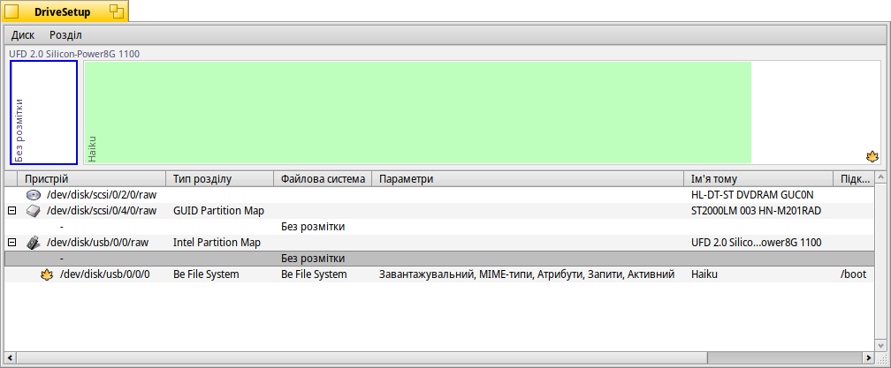
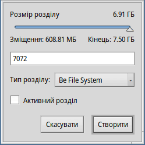

DriveSetup (Розмітчик диска)
DriveSetup (Розмітчик диска)
| Deskbar: | ||
| Розташування: | /boot/system/apps/DriveSetup | |
| Налаштування: | ~/config/settings/DriveSetup |
DriveSetup – це програма для створення, видалення та форматування розділів. Наразі вона не може змінювати розмір або переміщувати існуючі розділи, тому Вам знадобиться або том без розмітки (можливо, зовнішній USB-накопичувач чи інший жорсткий диск), або виконати початкову ініціалізацію за допомогою такого інструменту, як GParted LiveCD, щоб забезпечити місце для іншого розділу.
Верхню частину вікна займає графічне представлення усіх розділів на пристрої, який Ви вибрали зі списку, що розташований нижче. Кожен пристрій за замовчуванням може містити максимум 4 основні розділи. Це обмеження можна зняти, зробивши один з них розширеним розділом, який, у свою чергу, теоретично може містити необмежену кількість логічних розділів (практичні обмеження залежать, наприклад, від кількості інших встановлених операційних систем).
Можливо, Вам доведеться розгорнути такий список за допомогою віджета «+/-», який з'явиться у цьому випадку навпроти назви цього пристрою, щоб побачити деталі кожного логічного розділу.
Кольори та значки надають додаткову інформацію про доступні томи та розділи.
Окрім звичних значків для жорстких дисків, CD-приводів, USB-накопичувачів та інших, є кілька, які вказують на режим їхнього підключення:
| Розділ /boot | ||
| Розділ з шифруванням | ||
| Розділ зі спільним доступом через SMB/NFS, тощо. | ||
| Розділ підключений у режимі «тільки для читання» | ||
| Змонтований файл образу (дивіться команду diskimage) |
Коли розділ змонтовано, кольоровий сегмент показує використаний простір розділу. Колір залежить від типу розділу:
| Розділ у форматі BFS | ||
| Розділ у форматі відмінному від BFS | ||
| Розділ тільки для читання | ||
| Розділ з шифруванням |
Ви можете вибрати розділ і виконати різні команди з контекстного меню або меню , наприклад, / або .
Ви також можете або повністю розділ.
 Ініціалізація диска
Ініціалізація диска
Якщо Ви плануєте використовувати не один з розділів великого диска, а весь диск як один розділ, наприклад, USB-накопичувач або карту пам'яті Compact Flash, Вам доведеться спочатку ініціалізувати диск.
Для цього виділіть чистий диск (raw) у списку пристроїв і виберіть структуру розділів у меню .
– це правильний вибір для класичного завантаження через BIOS.
Створення нового розділу
Якщо на диску є неформатований простір, подібний до наведеного вище і який позначено <Без розмітки>, Ви можете створити новий розділ у цьому просторі за допомогою команди або клавіш швидкого доступу ALT C.
Ви побачите діалогове вікно, у якому зможете вибрати розмір і тип розділу. Виберіть , якщо Ви хочете використовувати розділ для інсталяції Haiku або якщо Ви хочете використовувати усі цікаві можливості Haiku, такі як атрибути та запити. Зауважте, що інші операційні системи можуть не мати доступу до такого розділу.
Чекбокс доступний, лише якщо Ви створили основний розділ, а не ще один логічний розділ у розширеному розділі. Вам слід встановити позначку на цю опцію, якщо Ви плануєте використовувати цей розділ для загрузки Haiku.
Перш ніж Ви зможете використовувати або навіть підключити новостворений розділ, на ньому потрібно створити файлову систему у процесі форматування.
Форматування розділу
Форматувати можна лише розділи, які ще не підключені. Виберіть файлову систему у підменю .
(BFS) є обов’язковою для загрузочного розділу Haiku та рекомендована для розділів даних, які використовуються з Haiku. Лише розділи у форматі BFS повністю підтримують запити та атрибути файлів Haiku.
Тут Вам потрібно вказати імя розділу та розмір його блоку. Розмір блоку – це мінімальний простір у байтах, який буде виділено для файлу. Рекомендовано 2048 байт на блок, але Ви можете вибрати більший або менший розмір, якщо у Вас є особливі потреби.
Якщо майбутні дані на Вашому розділі не потребуватимуть виконання запитів, Ви можете зняти позначку з опції , щоб трохи заощадити накладні витрати на управління індексом.